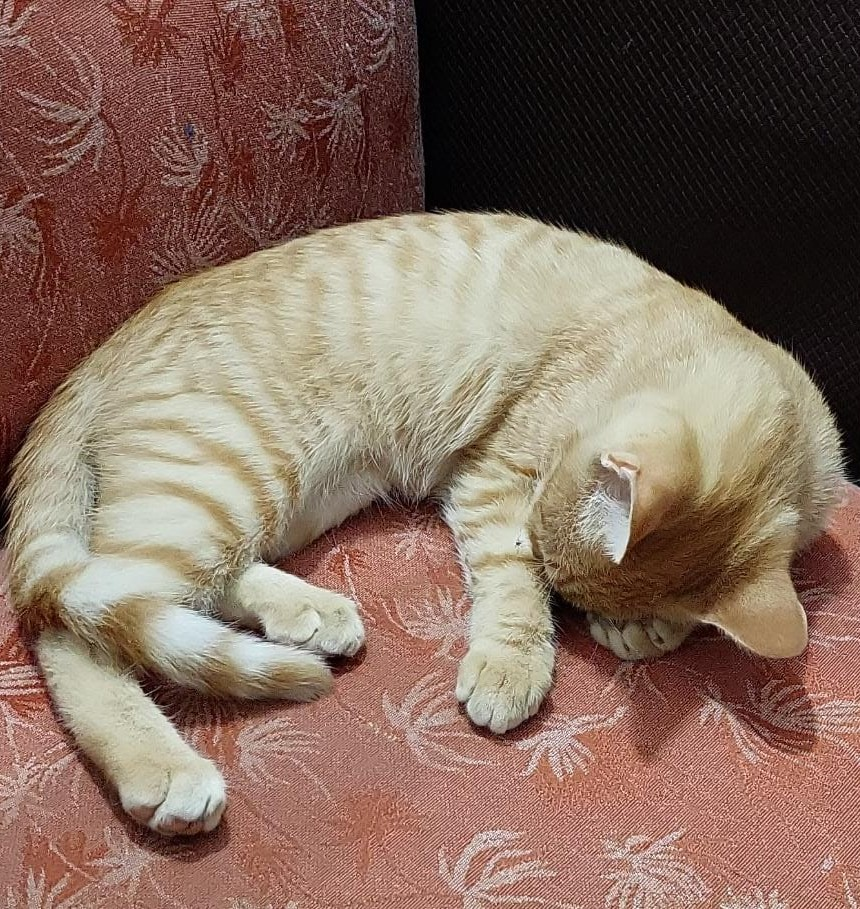

La vida de Miki
En los apacibles rincones de Presidencia Roque Sáenz Peña, en la cálida provincia de Chaco, Argentina, nació un gatito colorado que pronto cautivaría los corazones de quienes lo conocieran. Miki, como fue bautizado por aquellos que lo encontraron, inició su vida en circunstancias difíciles, pues fue abandonado apenas unas semanas después de venir al mundo.
Sin embargo, la adversidad no logró opacar el espíritu valiente y soñador de Miki. Desde muy temprana edad, este gatito demostró una determinación sin igual y un deseo ferviente de trascender las limitaciones impuestas por su origen.
Fue así como Miki, con el pasar de los días, encontró un hogar cálido y amoroso en el corazón de Carla y Emmanuel, un matrimonio con un profundo amor por los animales. Con su ternura y cariño incondicional, le brindaron a Miki el refugio y la seguridad que tanto necesitaba, convirtiéndose en sus fieles compañeros de vida.
Pero Miki, más allá de disfrutar de las comodidades de su hogar, albergaba un sueño que lo distinguía del resto de los gatos: anhelaba convertirse en el líder máximo de su país, nada menos que el presidente de la República Argentina. Con una determinación inquebrantable, dedicaba sus días a observar atentamente las noticias en la televisión, estudiando las políticas públicas y planificando estrategias para alcanzar su ambiciosa meta.
A pesar de su aspiración política, Miki no perdía su esencia de gato travieso y juguetón. Le encantaba trepar los altos árboles del vecindario, explorando los confines de su territorio con destreza felina. Sin embargo, su corazón siempre estaba lleno de bondad y afecto hacia quienes lo rodeaban, siendo conocido por su naturaleza amigable y su capacidad para hacer amigos en cada rincón de la ciudad.
Con el paso del tiempo, Miki se convirtió en una figura querida y respetada en Presidencia Roque Sáenz Peña, no solo por su carisma y encanto, sino también por su incansable determinación para alcanzar sus sueños. Aunque el camino hacia la presidencia pudiera ser largo y lleno de desafíos, Miki estaba dispuesto a enfrentarlo con valentía y perseverancia, demostrando que incluso un gato puede aspirar a grandes alturas si se lo propone con fervor y convicción.